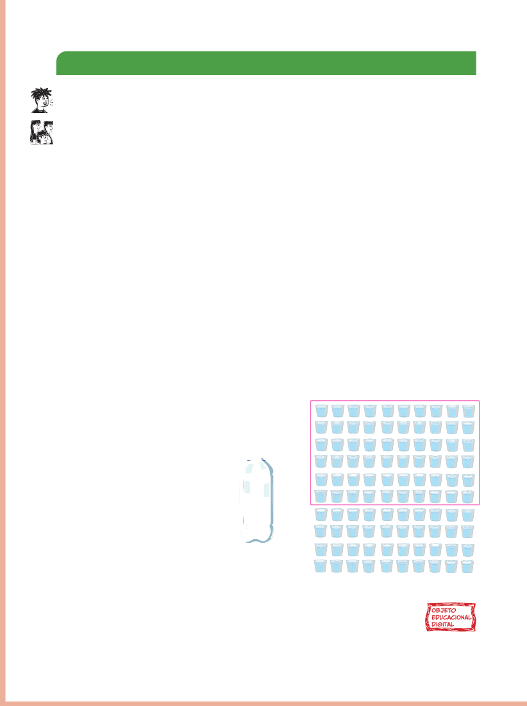

TROCANDO IDEIAS
OBSERVE A FOTOGRAFIA DE ABERTURA DO CAPÍTULO E CONVERSE SOBRE AS QUESTÕES A SEGUIR.
Respostas pessoais.
1)
O QUE A IMAGEM SUGERE?
2)
QUANTO VOCÊ E SUA FAMÍLIA CONSOMEM DE ÁGUA DURANTE O MÊS?
3)
NO LOCAL ONDE VOCÊ MORA, HÁ ÁGUA POTÁVEL OU HÁ FALTA DELA?
OS NÚMEROS DA ÁGUA
A ÁGUA É ESSENCIAL PARA A VIDA EM NOSSO PLANETA.
NO ENTANTO, ESSE RECURSO É FINITO, MOTIVO PELO QUAL NÃO PODEMOS DESPERDIÇÁ-LO.
O BRASIL DESTACA-SE PELA FARTURA DOS SEUS RECURSOS HÍDRICOS; PORÉM, A DISTRIBUIÇÃO DA ÁGUA NO PAÍS É DESIGUAL.
A MAIOR PARTE DA SUPERFÍCIE DE ÁGUA, ISTO É, 60%, CONCENTRA-SE NA AMAZÔNIA.
VAMOS SUPOR QUE TODA A ÁGUA DO BRASIL COUBESSE EM UMA GARRAFA E QUE A ÁGUA DESSA GARRAFA FOSSE SUFICIENTE PARA ENCHER 100 COPOS.
SEPARANDO 60 DESSES COPINHOS COM ÁGUA, ELES REPRESENTARIAM A QUANTIDADE DE ÁGUA QUE ESTÁ CONCENTRADA SOMENTE NA AMAZÔNIA.
PODEMOS DIZER QUE ESSA QUANTIDADE É 60 PARTES EM 100 PARTES, O QUE SIGNIFICA 60 POR CENTO, OU 60%.

Valéria Rezende
OBJETO EDUCACIONAL DIGITAL
A ÁGUA POTÁVEL É UM DIREITO HUMANO.
UMA DAS MANEIRAS DE CONTRIBUIR PARA QUE ESSE DIREITO SEJA GARANTIDO A TODOS É ADOTAR ATITUDES DE COMBATE AO DESPERDÍCIO DE ÁGUA.
Infográfico - Acesso à água potável no Brasil
OBJETO EDUCACIONAL DIGITAL
Objeto Educacional Digital em formato de infográfico, no qual são explorados o conceito de uso correto da água potável e do descarte de esgoto.
É um objeto digital que aborda a relação de uso correto da água potável e do descarte de esgoto com a conscientização e a gestão responsável de recursos hídricos.
Também será possível observar os dados distribuídos nas leituras sugeridas, bem como sua relevância para a reflexão sobre o assunto.